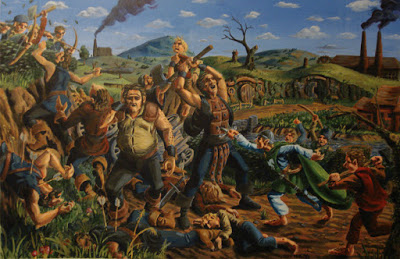

 |
| The "little folk" rise up against Saruman's Ruffians. |

The hobbit-folk had previously enjoyed a
society largely free of the affliction called “government.” Frodo and his
friends were mortified to encounter a regimented dystopia in which the shire-riffs
–who had been peripheral under the old order – were enforcing an ever-growing
list of rules handed down by an unseen “Chief.” The shire-riffs themselves
weren’t intimidating, but behind them lurked a band of “Ruffians” who looked
upon the inhabitants of the Shire with disdain and were prepared to inflict
mortal harm on anybody who resisted the Chief’s decrees.
Farms and homes, once self-sufficient, had been ravaged by
officials called “Gatherers” and “Sharers,” although the bounty that was gathered
in the Chief’s name was never shared with the populace. The verdant
countryside, which once thrived under the husbandry of private landowners, had
been despoiled by those acting on the “authority” of the new government. Any
residents of the Shire who resisted that “authority” were hauled away to “lockholes.”
Furious over what had been done to their home and steeled by
their experience in battle, Frodo and his companions sounded the tocsin and
organized the Hobbit-folk to “scour the Shire.” This meant driving the Ruffians
and their adherents from the land, including any shire-riffs who remained loyal
to the usurpers. Frodo gave strict instructions to avoid bloodshed where
possible. The Chief – as it happens, Saruman in disguise – would not relinquish
power without extracting a price in blood.
The “scouring,” as
portrayed by Tolkien in “Return of the King,” is distant kindred to Homer’s account
of Odysseus dealing with the
interlopers who had plundered his home and sought to seize control of Ithaca
during his lengthy absence. “I will not stay my hand till I have paid all of
you in full,” Odysseus told the men who had sought to steal everything he
cherished, including Penelope. “You must fight, or flee for your lives.”
In dealing with the shire-riffs – or, to use the more
familiar term, sheriffs – who had become oppressors, Frodo and his friends were
more merciful than Odysseus and Telemachus had been. As Sauron had expected,
many of those who had been public servants found it intoxicating to exercise
power over the “little folk.” Others, disgusted by what they had become, threw
away their badges of authority and were welcomed into the righteous rebellion
against the Chief and his enforcers.
“What can I do? You know I went for a shire-riff seven years
ago, before any of this began,” lamented Robin, one of the officers, as the
rebellion coalesced. “It gave me the chance to be walking around the country,
and seeing folk, and hearing the news, and knowing where the good beer was --but
now it’s different.” He and the others had once been servants of the Shire; now
they were law enforcers in the service of the clique that had seized control of
it.

Whatever else may be said about Sheriff Glenn Palmer of Oregon’s
Grant County, he appears to be the kind of man who would find himself on
the right side of the “scouring.” That section of eastern Oregon strongly
resembles Tolkien’s Shire, both in terms of its scenic quality and the
Sauron-grade misery inflicted on it by the Federal Government.
Glenn Palmer, an Air Force veteran, has made a career in law
enforcement, which is both a moral liability and a cause for concern. In
defiance of reasonable expectations, however, he describes his role as that of a
servant, rather than an overseer.
“I am not a government employee,” Palmer insists. “I am a
public servant – I serve the people who elected me.”
It’s quite likely that Palmer, like Robin and the other
Shire-riffs from Tolkien’s parable, chose a law enforcement career out of
relatively benign motives, only to find the nature of that occupation being
redefined by those who presume to rule us.
Re-elected four times by the residents of the vast but
thinly populated county, Palmer is
now being targeted for removal by the Oregon Department of Justice – which is
acting as a cats’-paw for the Regime in Washington. This is not because Palmer
has made himself notable by abusing the local citizenry; given the ubiquitous
competition he would face, Palmer would have a hard time distinguishing himself
had that been his intention. He has become the focus of the Regime’s malign
intention because he properly perceives the Feds as a threat to the rights and
property of his fellow Grant County residents.
“We started seeing the excessive use of force, and people
getting guns pointed at them by federal officers for wood permit violations
[and] road closure violations,” Palmer recalled during a
speech a few years ago. “It’s excessive use of force, it’s uncalled-for, it’s
unacceptable.”
“I chose … to take a stand between bad government … and the
people I am sworn to protect and defend,” Palmer declares. This is true “whether
they’re from my county, or whether you come to visit or recreate, or if you
have a business, or are just traveling through. I have a duty and obligation to
keep you from bad government.”
Palmer is being denounced as a “rogue” sheriff not because
he has violated individual rights, but because he is not a federal
supremacist – something that became quite apparent during the recent
standoff in nearby Harney County. While he carefully avoided direct
intervention in the conflict, Palmer expressed sympathy for the grievances that
inspired the protest and met
with representatives when they visited Grant County. He also suggested
that the Feds should commute the grotesquely disproportionate prison term
inflicted on Dwight
and Steven Hammond, the Burns-area ranchers whose long-standing conflict
with esurient federal bureaucracies led to the protest and ensuing standoff.
Such a conciliatory posture toward protesters who occupied
federal “property” is not without precedent.
In November 1972, hundreds of activists with the American
Indian Movement, many of them heavily armed, seized control of the Washington,
D.C. headquarters of the Bureau of Indian Affairs and held it for a week. The
occupiers assaulted law enforcement officers, blew open a safe, seized
documents, ignored judicial orders to vacate the premises, issued a list of
demands to the federal government, and did an estimated $2 million worth of
damage to the facility – and were allowed to leave without being arrested. For
reasons rooted in identity politics, that episode is regarded
with reverence by many of the same left-leaning observers who treated the
Malheur Refuge protesters as the American analogue to ISIS.

Ammon Bundy and his fellow protesters were headed to a town
hall meeting with Sheriff Palmer in John Day when they
were ambushed by the FBI’s proprietary death squad, the so-called Hostage
Rescue Team, on Highway 395. That ambush led to the fatal shooting of LaVoy
Finicum, which was precipitated by the FBI’s attempt to murder him as he
emerged from the truck with his hands raised in surrender.
Rather than presenting Sheriff Palmer with a valid arrest
warrant for the protesters, the FBI – seeing
him as politically unreliable -- treated him as a “security leak.” Last
week, however, Palmer’s
office arrested Malheur Refuge protester Scott Willingham on a federal
warrant. However one assesses the wisdom of that decision, it demonstrates that Palmer
would have enforced what he considered a valid writ had the FBI sought his help
in arresting the protesters. Instead, the Bureau designed a plan that was perfectly
calibrated to end in bloodshed. Not only did they treat Palmer as a “security
leak,” the FBI operators made a point of concealing both their intentions – and the
evidence of their misconduct – from the
Oregon State Police.
This is the behavior of an occupation force – which is how
the Feds are regarded by millions of Americans residing in the western United
States.
As is the case in too many counties in the region, the Feds “own”
most of the land in Grant County. Using “endangered species” designations and
similar tactics, the
Feds have moved aggressively to eradicate logging, ranching, and other industry
in the county, with the predictable economic consequences for residents who
are members of the productive sector.

The federal approach to forest management could be
summarized in the phrase, “Lock ‘em up, and burn ‘em
down.” Years of such insightful federal stewardship culminated in last
summer’s epochal Canyon Creek Complex Fire, which destroyed scores of homes and
devoured more than 65,000 acres. Seeking
to deflect citizen demands for an independent investigation, the US Forest
Service employed a familiar Soviet rationale by blaming the weather, ratherthan its own corruption and ineptitude, for its failure to suppress a fire that
feasted on forests flush with fuel following
years of federal neglect.
Frustrated by the timidity of a county commission unwilling
to confront the Feds, Sheriff
Palmer created a citizens panel to devise a more suitable forest management
plan. In doing so he acted within the scope of his delegated authority. Following
the fire Palmer
also deputized scores of other local citizens to participate in safety
patrols and search and rescue operations. This action is depicted by Palmer’s
critics as an effort by the sheriff to build his own private militia, which is
probably not the case (although there
are problems with at least some of his appointees).
Last August, just before he found himself dealing with the federally
abetted inferno that was laying waste to his county, Palmer announced that
he was interposing against SB
941, a civilian disarmament measure enacted by Oregon Democrats. Since it
was passed on a strict party line vote (save the three Democrats who voted against
it), calling that measure a product of the State Legislature is an example of
intellectual consumer fraud: It was a purely partisan enactment by urban
collectivists who look upon rural Oregonians with a revulsion rivaling that Lenin reserved for the Kulaks
and Cossacks.

Sheriff
Palmer had testified against the bill before the Legislature, candidly
warning them that he would not enforce it were it to be passed. He was as good
as his word.
SB 941, which would restrict of prohibit the private sale or
transfer of firearms without a background check, “is in violation of the Oregon
and US Constitutions,” Palmer
explained in an August 12 letter to residents of Grant County. The firearms
in question “are private property and [if] those firearms, or any firearm for
that matter, are used in the commission of a crime [they] will then be subject
to search and seizure pursuant to a search warrant….” However, continued the
sheriff, “we shall take no part in investigating, responding to, expending
resources or taxpayer funds in … disarming law abiding citizens,” nor will his
department take part in “sting operations [or] give information to other
agencies regarding the sale or transfer of firearms as related to SB 941.”
Despite his commendable willingness to interpose against
civilian disarmament initiatives, Sheriff
Palmer remains enlisted in the murderous fraud called the War on Drugs. He
doesn’t appear zealous in the cause of prohibition, however: His
department was not listed among those that had carried out “asset forfeiture” seizures
during 2014, the most recent year for which the relevant statistics are
available. The Feds have used the prospect of prohibition-derived plunder to
entice most sheriffs into their seraglio. On this front, Palmer’s involvement
with the Feds appears to be limited to flirting – which no doubt reinforces
their determination to see him replaced by a more pliant sheriff.
If, as anticipated, the Oregon State Department of Justice
finds Palmer unsuitable for his office, it can have him de-certified as a law
enforcement officer, but he can only be removed by recall or electoral defeat. Palmer
could continue in his office as a “civilian” sheriff if his peace officer certification
would be revoked – but under
Oregon state law he couldn’t run for re-election this November.
During the occupation of the Malheur Refuge, Sheriff Pat
Garrett of neighboring Washington County dispatched
his deputies to a bar in nearby Burns to help the FBI collect dossiers on
demonstrators who had come in support of the protest.
To use Tolkien’s terminology, Garrett is typical of the complaisant
shire-riffs who did the bidding of the “Ruffians” employed by the tyrannical
Chief in Bag End. Palmer, irrespective of his faults, had the sand to remain aloof.
“That sheriff,” Garrett later complained to a reporter, with reference to Palmer, “did not see eye to eye with the rest of law enforcement.”
“That sheriff,” Garrett later complained to a reporter, with reference to Palmer, “did not see eye to eye with the rest of law enforcement.”
Garrett is the kind of functionary who would see that statement as an indictment, rather than an encomium. Similar things could have been said of the shire-riffs who put aside their insignia of office and joined Frodo and Sam when the time came for the scouring of the Shire.
This week's Freedom Zealot Podcast:
Dum spiro, pugno!
5 comments:
Thanks for writing this, it's fun to read. I read another blog article at http://endtheblm.blogspot.com/2016/02/are-forest-service-and-its-boot-lickers.html#comment-form . It suggests the campaign to smear Sheriff Palmer is led by Steve (John Day Councilman) and Judy Schuette, Kay Scheurer Steele and Terry Steele, and Valerie Luttrell. Although mucking through the prickly ranting and tin hat-ness was a chore, that author's research is interesting. The night LaVoy was killed there was a meeting in John Day and people were waiting for he and the others to show up. The End the BLM blog shows photos of people protesting the meeting, supposedly the same clique smearing Palmer. This site (http://www.democraticunderground.com/10141326575) shows photos of the meeting, one showing the group of about 20 the Schuettes and Steeles supposedly support waving signs like "I heart my government lands." Another shows the folks waiting for Ammon to show, and I count 20 just in the first two rows in that photo. There is another story you could refer to in addition to in addition to Tolkein's: Orwell's Animal Farm, in which a few pigs and their vicious dogs take apart any hope of justice. Thanks again for your wonderful blog
I have come to respect your reporting, even when I don't agree with you. However, in this case, I do.I would like to point a couple of things out, though. Glenn did attend a lunch with some of the protesters and was in attendance at the community meeting, but he organized neither. Both the luncheon meeting and the community meeting were the work of Tad Houpt, an activist in his own right. Also, the "troubling" deputy, Roy Peterson, was deputized for a single search in order to protect the county financially. Enlisting Roy probably saved the lives of those lost individuals. He knows that area of the county as well as you know your own living room.It may not have been "politically correct", but it was the right decision.
Thanks for the enlightening sunshine, Jane.
Politically correct is just silliness. The average American commits inadvertently 3 felonies per day. There are alotta rules but isn't that the point?
The abcnews article noted:
Now the truth comes out:
"Meanwhile in Grant County, immediately to the north, Sheriff Glenn Palmer called the occupiers "patriots." When Bundy and others were arrested during a Jan. 26 traffic stop, they were on their way to his county. An Arizona rancher who police fatally shot when they say he reached for a gun shouted he was on his way to meet Palmer.
Palmer is a member of the Constitutional Sheriffs and Peace Officers Association, a group that bills itself as "the last line of defense" against a federal government they contend overreaches on gun control and other issues. They see sheriffs as the ultimate law enforcement authority in their dispute with the federal government over control of federal lands."
---------
Kudos to this journalist for the sunshine on the actions of a federal government out of control.
Are the feds (who hid the fact they fired shots....) guilty of executing a troublemaking Arizona rancher "in cold blood?"
The tyranny that Washington DC reigns down all over the globe with its drone attacks on innocent women and children in Asia, Africa, the Middle East... has come back to roost and haunt us here at home.
Nice way to wrap this smelly mess up and pin the tail on the donkey and you were nice as pie to the curuped ones who flock to the easy freeloading government employment. Reminds me of the carpet bangers from the days of the Reconstruction Act, as history has clearly noted.
Quick question, too much time has gone by which points to a cover up on the rancher gunned down along with his bull. Any new government lied or propaganda spewing out by the government''s crime partners, the media?
Please correct the link you leave about Glenn Palmer participating in the War on Drugs the link leads you to a Washington agency's Grant County Bulletin.Just read the bottom of the page. thank you
Post a Comment